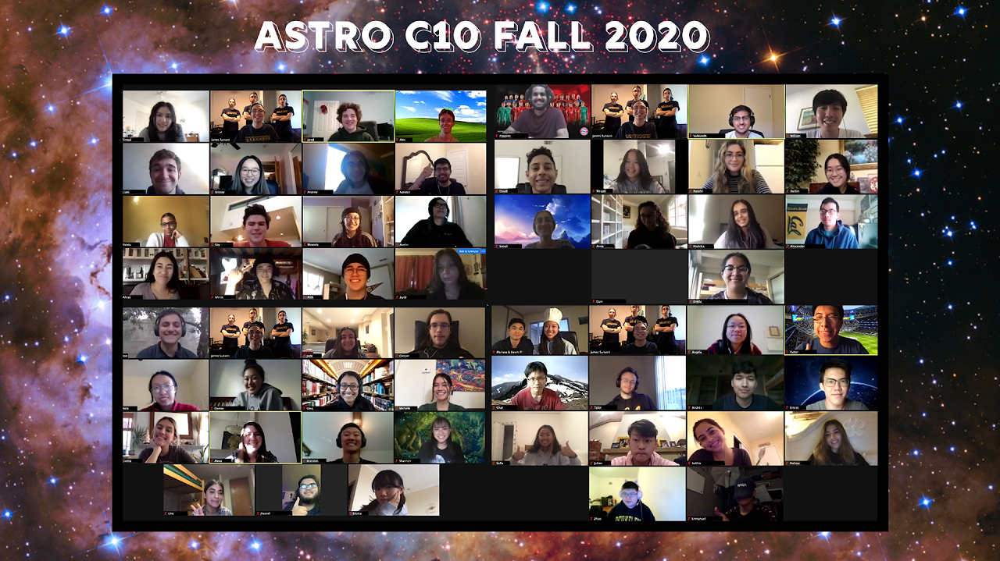

Astro C10: Introduction to General Astronomy
Introduction to General Astronomy (Astro C10) was the first course I took at UC Berkeley. I immediately fell in love with the course and it has been an integral part of my experience at Cal eversince. I graded for the course in Fall 2019, taught the course as an undergraduate student instructor (UGSI) in Fall 2020, and finally I was the Head UGSI for the course in Fall 2022. I am the first undergraduate to ever be the Head student instructor for the course in its 30+ year long existence. It is one of the most massive courses at UC Berkeley averaging 900+ students per semester. It has become a staple of the undergraduate curriculum at Cal for all majors. As the head student instructor for this course, I oversaw all the logistics for the course. I have taught a total of 6 discussion sections in my time with this course encompassing 180+ students. I have also given guest lectures in Wheeler Auditorium: one of the largest auditoriums on campus. As the head student instructor I oversaw 10 other student instructors (graduate and undergradute) and 16 graders for the course. As a student instructor I taught discussion sections, hosted office hours, hosted review sessions, created demos and lesson plans, and wrote quizzes for the course. Learning to teach in the middle of the pandemic in Fall 2020 was a large undertaking as it posed a challenge of keeping virtual learning engaging. My work with this course won me the Outstanding Teaching Award for my work in Fall 2020.
Class Photos:
